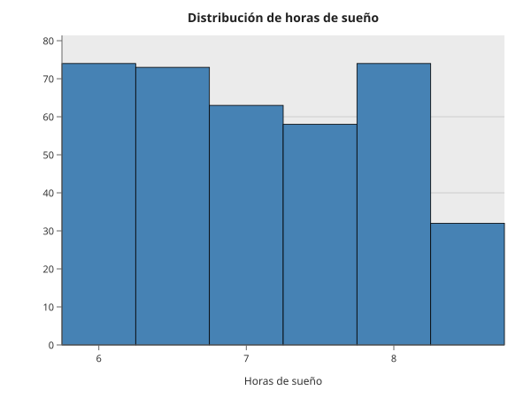
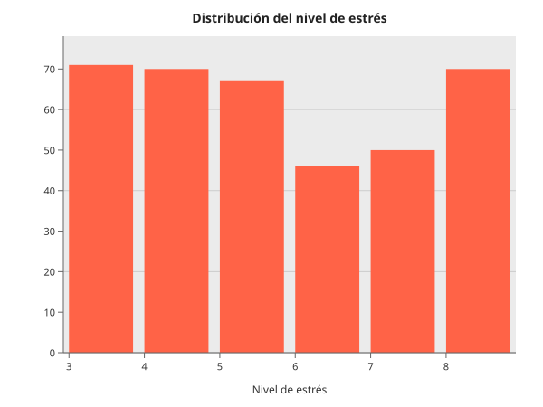
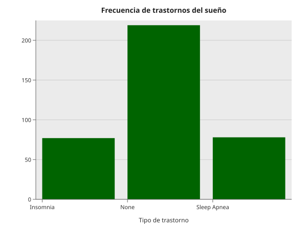
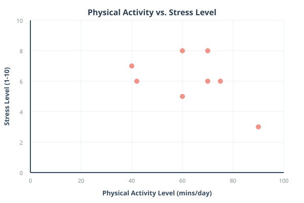
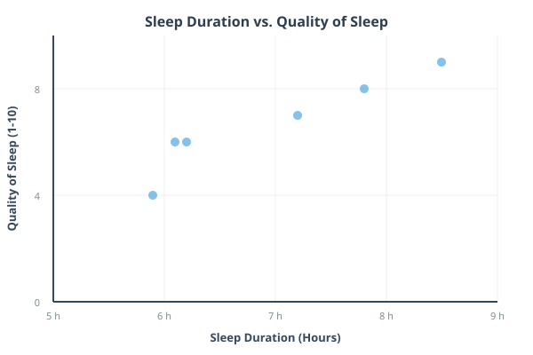
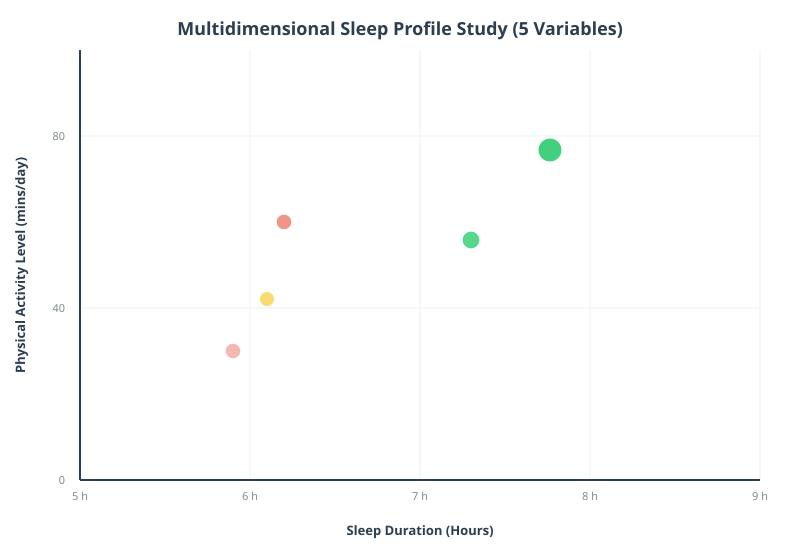

El sueño es un pilar fundamental del bienestar humano, ya que influye directamente en la salud física, mental y el rendimiento diario. En la actualidad, factores como el estrés, la carga laboral y los hábitos de vida han generado cambios importantes en los patrones de descanso.
En este proyecto se realiza un análisis exploratorio de datos con el objetivo de identificar cómo distintas variables influyen en la calidad del sueño. A través de visualizaciones interactivas, se construye una narrativa que permite comprender mejor los comportamientos y tendencias presentes en la población analizada.
En la vida cotidiana, muchas personas experimentan dificultades para dormir adecuadamente. Esto genera interrogantes importantes:
Este análisis busca responder estas preguntas mediante la exploración de datos, identifying patrones y relaciones entre variables clave.
Los datos utilizados provienen del Sleep Health and Lifestyle Dataset, el cual contiene 374 registros. Incluye variables cualitativas y cuantitativas reflejadas en la siguiente estructura inicial:
Person.ID Gender Age Occupation Sleep.Duration Quality.of.Sleep <int> <chr> <int> <chr> <dbl> <int> 1 Male 27 Software Eng. 6.1 6 2 Male 28 Doctor 6.2 6 3 Male 28 Doctor 6.2 6 4 Male 28 Sales Rep. 5.9 4 5 Male 28 Sales Rep. 5.9 4 6 Male 28 Software Eng. 5.9 4 6 rows | 1-7 of 14 columns
A continuación, se detalla el resumen estadístico descriptivo ejecutado sobre las variables del conjunto de datos completo:
## Person.ID Gender Age Occupation ## Min. : 1.00 Length:374 Min. :27.00 Length:374 ## 1st Qu.: 94.25 Class :character 1st Qu.:35.25 Class :character ## Median :187.50 Mode :character Median :43.00 Mode :character ## Mean :187.50 Mean :42.18 ## 3rd Qu.:280.75 3rd Qu.:50.00 ## Max. :374.00 Max. :59.00 ## Sleep.Duration Quality.of.Sleep Physical.Activity.Level Stress.Level ## Min. :5.800 Min. :4.000 Min. :30.00 Min. :3.000 ## 1st Qu.:6.400 1st Qu.:6.000 1st Qu.:45.00 1st Qu.:4.000 ## Median :7.200 Median :7.000 Median :60.00 Median :5.000 ## Mean :7.132 Mean :7.313 Mean :59.17 Mean :5.385 ## 3rd Qu.:7.800 3rd Qu.:8.000 3rd Qu.:75.00 3rd Qu.:7.000 ## Max. :8.500 Max. :9.000 Max. :90.00 Max. :8.000 ## BMI.Category Blood.Pressure Heart.Rate Daily.Steps ## Length:374 Length:374 Min. :65.00 Min. : 3000 ## Class :character Class :character 1st Qu.:68.00 1st Qu.: 5600 ## Mode :character Mode :character Median :70.00 Median : 7000 ## Mean :70.17 Mean : 6817 ## 3rd Qu.:72.00 3rd Qu.: 8000 ## Max. :86.00 Max. :10000 ## Sleep.Disorder ## Length:374 ## Class :character ## Mode :character
Para iniciar el análisis, es necesario entender cómo se distribuyen las horas de sueño en la población. Gráficas unidimensionales.

Se observa que la mayoría de los individuos duermen entre 6 y 8 horas, con un punto central cercano a las 7 horas. Esto sugiere que gran parte de la población mantiene hábitos relativamente adecuados. Sin embargo, surge una pregunta clave: ¿dormir más horas realmente mejora la calidad del sueño?
Antes de responder la pregunta anterior, es importante analizar otro factor clave: el estrés.

Se identifica una distribución polarizada, donde existen grupos con niveles bajos y altos de estrés. Esto resulta relevante, ya que el estrés podría tener un impacto directo en la calidad del descanso.
Otro aspecto importante es la presencia de trastornos del sueño dentro de la población.

Aunque la mayoría no presenta trastornos, existe una proporción significativa de casos de insomnio y apnea del sueño. Esto indica que, aunque el promedio general es saludable, existen grupos vulnerables.
Ahora que comprendemos mejor estas variables, analizamos cómo se relacionan entre sí. Gráficas bidimensionales.

No se observa una relación lineal clara. Incluso personas con alta actividad física presentan niveles elevados de estrés, lo que sugiere que este depende de múltiples factores.
Retomando la pregunta inicial, analizamos la relación entre duración y calidad del sueño.

Se observa una relación positiva clara: a mayor duración del sueño, mayor calidad percibida. Esto refuerza la importancia de dormir una cantidad adecuada de horas.
Para obtener una visión más completa, se integran múltiples variables. Gráfica multidimensional.

Se observa que menores niveles de estrés tienden a asociarse con mayor duración del sueño. Además, la actividad física aparece distribuida en diferentes edades, mostrando una influencia positiva en la calidad del descanso.
Facetas.
Se observan diferencias importantes según la ocupación. Profesiones del área de la salud presentan patrones más dispersos, lo que sugiere condiciones laborales más exigentes.
Imagen compuesta.
Esta visualización resume los hallazgos principales, mostrando que, aunque la mayoría presenta hábitos estables, el estrés y los trastornos del sueño siguen siendo factores críticos.
A partir del análisis realizado, se concluye que el sueño está influenciado por múltiples factores interrelacionados.
En primer lugar, el estrés se posiciona como uno de los elementos más determinantes en la calidad del descanso. Además, se evidencia que existe una relación directa entre la duración del sueño y su calidad, especialmente alrededor de las 7 horas.
Finalmente, la ocupación también juega un papel importante, ya que ciertas profesiones presentan patrones de sueño más irregulares.
En conjunto, estos resultados resaltan la importancia de mantener un equilibrio entre hábitos de vida, salud mental y descanso adecuado.